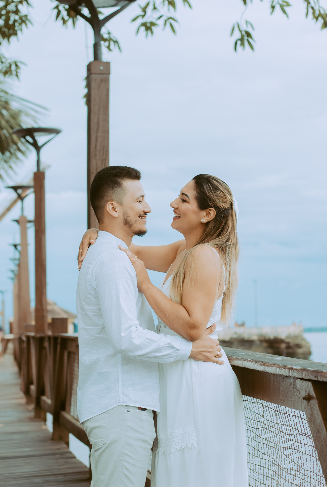
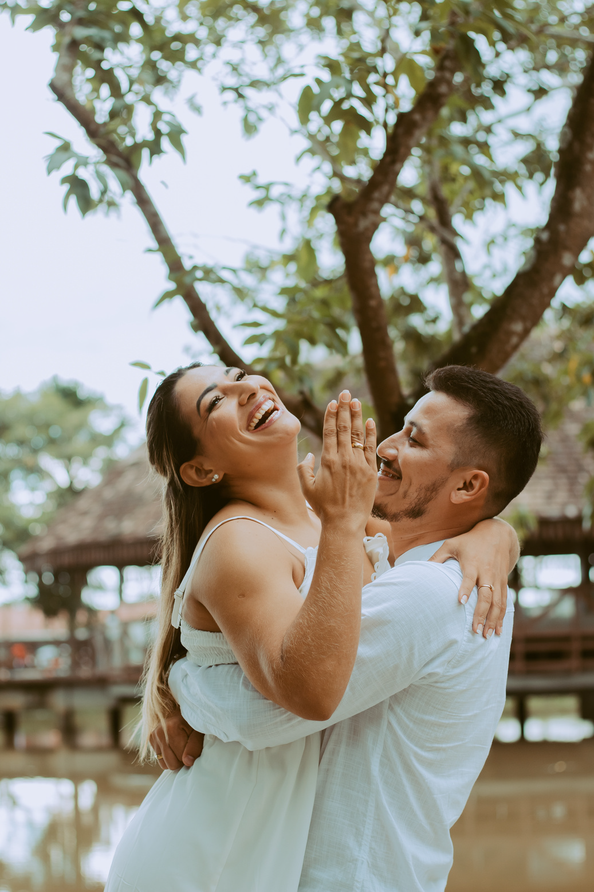
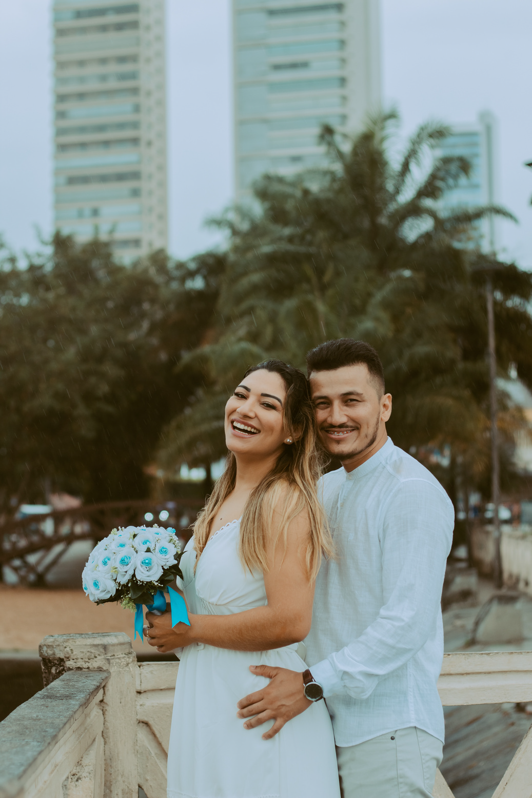
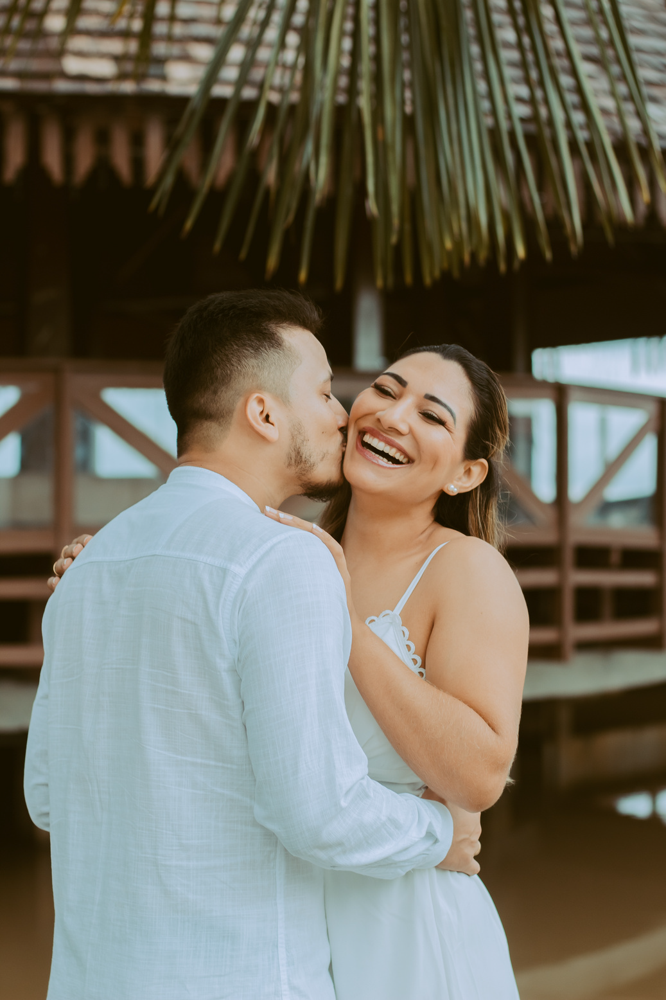
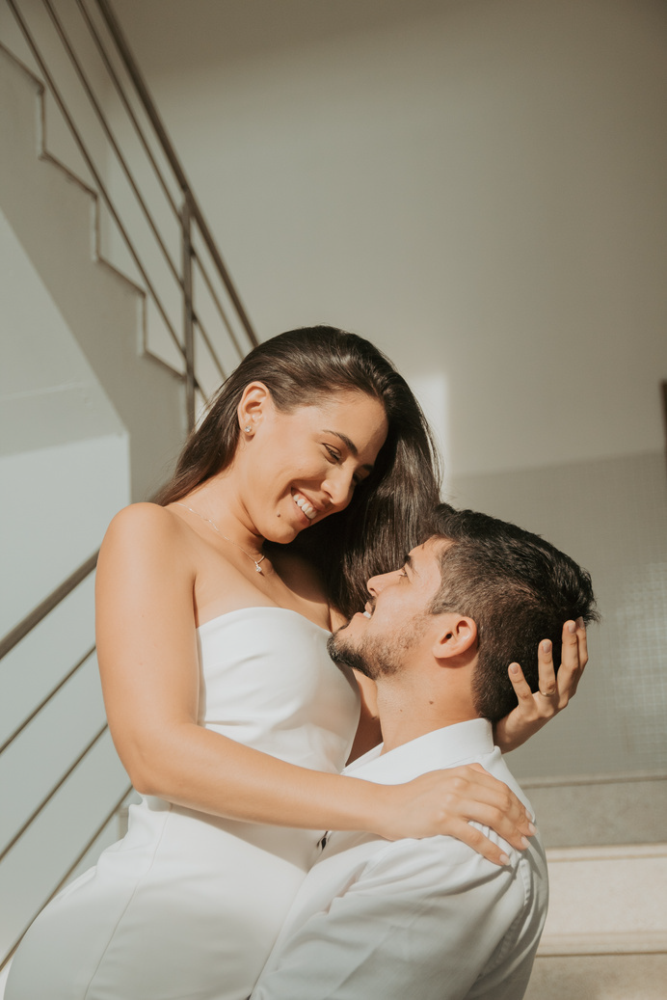
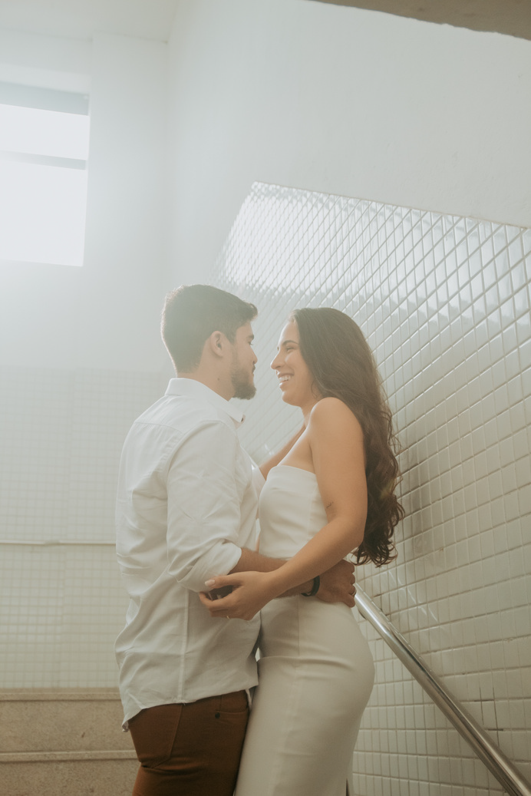
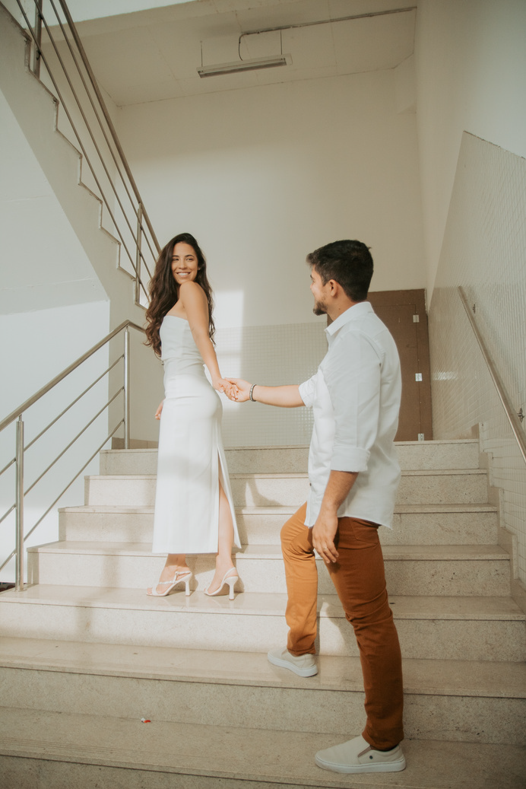

Olá! Meu nome é Erica Luana e sou uma fotógrafa
apaixonada, com um amor profundo por Jesus Cristo.
A fotografia sempre foi uma parte essencial da minha
vida, e vejo essa arte como um presente de Deus.
Tenho mais de dois anos de experiência em fotografia,
e minha maior alegria é eternizar histórias através das
minhas lentes.
Amo capturar momentos especiais e falar sobre
identidade, não apenas como nos vemos, mas como
Cristo nos vê. Acredito que cada pessoa tem uma
beleza única que merece ser celebrada e lembrada.
Como uma boa ouvinte, eu me dedico a conhecer e
compreender as histórias de cada um dos meus
clientes, e isso se reflete em cada foto que tiro.
A criatividade é minha paixão, e me esforço para
trazer um toque único e pessoal em cada sessão
fotográfica. Meu objetivo é sempre criar imagens que
não apenas revelem a aparência externa, mas que
também capturem a essência e a beleza interior de
cada pessoa.
Se você procura por uma fotógrafa que valoriza sua
história e busca eternizar momentos de forma criativa
e significativa, será um prazer trabalhar com você.
Vamos juntos criar memórias que durarão para
sempre.
POR QUE FAZER UM ENSAIO?

NOVA EXPERIÊNCIA
O ensaio fotográfico é um momento
único e mágico para se conectar e
enfrentar todos os medos e
inseguranças físicas. Ele proporciona
uma experiência singular, onde tentar
algo novo só tem a acrescentar!

AUTO ESTIMA
Ser fotografada é mais do que capturar
uma imagem; é um ato de
autovalorização. Durante o ensaio, você
terá a chance de ver a si mesma sob
uma nova luz, revelando a beleza e a
força que talvez você não perceba no dia
a dia.

ETERNIZAR MOMENTOS
Cada fase da vida é preciosa e cheia
de significados. Um ensaio
fotográfico é a maneira perfeita de
capturar esses momentos especiais,
transformando-os em lembranças
duradouras.

VALORIZAÇÃO PESSOAL
Um ensaio fotográfico dedicado a
você é uma oportunidade para se
mimar, destacar suas qualidades e se
sentir especial. Investir em você para
reconhecer e valorizar sua própria
beleza e singularidade.
INVESTIMENTO



PACOTE 1
15 fotos
1 look
1h/1h30 de duração
PACOTE 2
20 fotos
1 look
1h/1h30 de duração
PACOTE 3
25 fotos
2 looks
2h/2h30 de duração
AGENDAMENTO
A data do ensaio só é confirmada após o pagamento do
adiantamento. O adiantamento é de 40% do valor do pacote
escolhido. Após o agendamento, não é possível o cancelamento.
Os looks e a maquiagem não estão inclusos nos pacotes. Após
confirmar o ensaio, indicarei locais e ajudarei na escolha das
roupas de acordo com o estilo de foto escolhido pela cliente. Caso
o tempo esteja ruim, remarcaremos as fotos. O deslocamento
para outra cidade é por conta do cliente.
COMO RECEBO AS FOTOS?
Depois da realização do ensaio, as fotos já tratadas
serão enviadas por meio de uma galeria para você
escolher em até 10 dias úteis, de acordo com a
quantidade de fotos do seu pacote. Após a escolha
das fotos, enviarei o link do seu ensaio em uma pasta
do Google Drive, onde você poderá fazer download.
A pasta ficará disponível para download por 15 dias;
Todas as fotos são entregues digitalmente, com resolução máxima e para redes sociais;
Foto extra: R$ 15,00;
Não entrego fotos sem tratamento.
CONDIÇÕES DE PAGAMENTO
Para reservar a data do seu ensaio é necessário o
pagamento inicial de R$100,00. O restante deve ser
pago até o dia do ensaio;
Aceitamos dinheiro, PIX, ou à vista.
Caso haja desistência do ensaio, a taxa inicial paga
não será ressarcida.